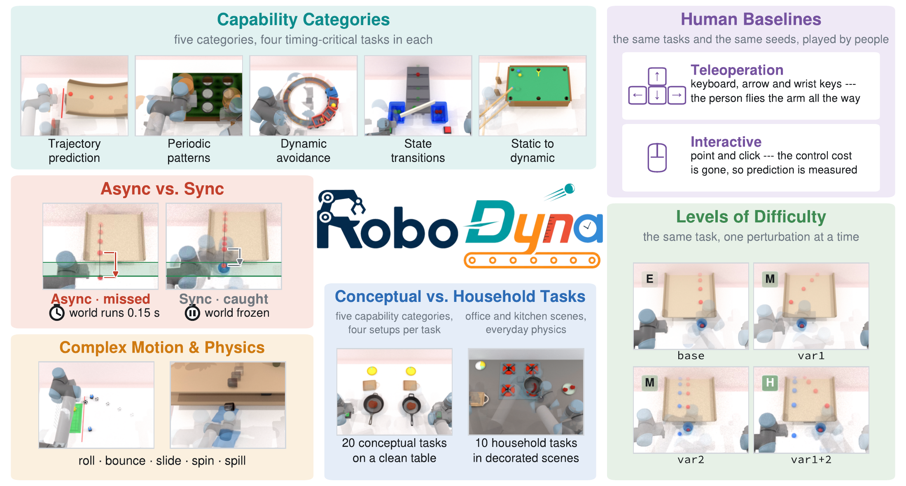
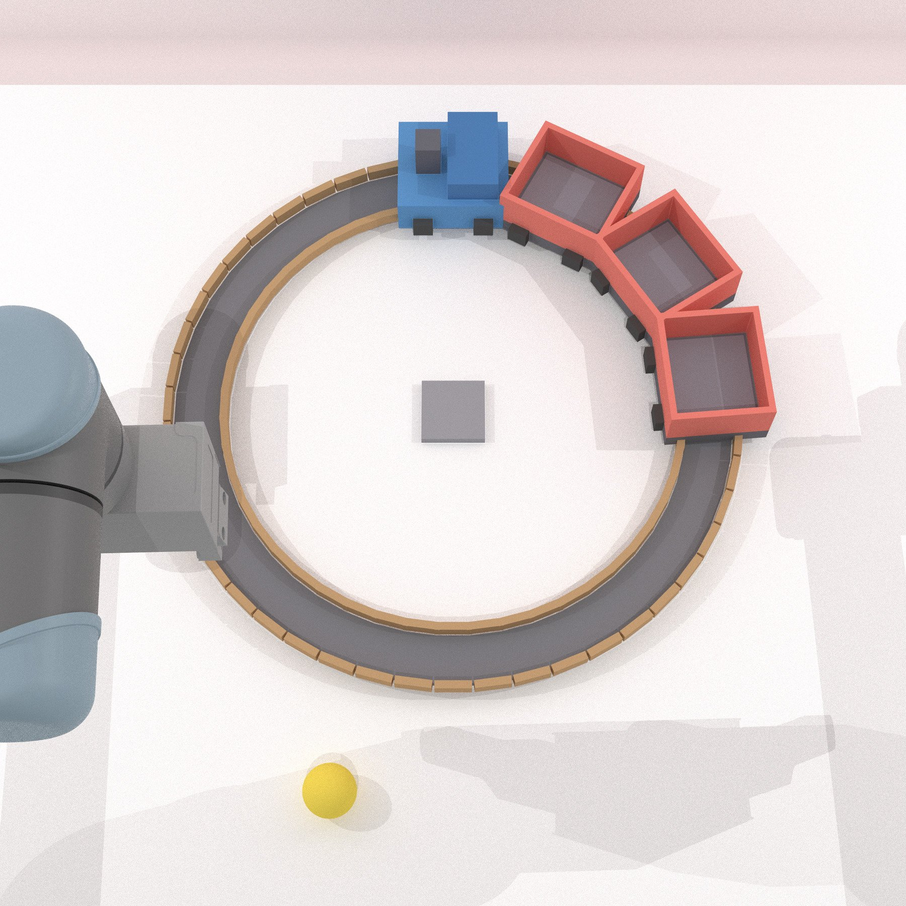
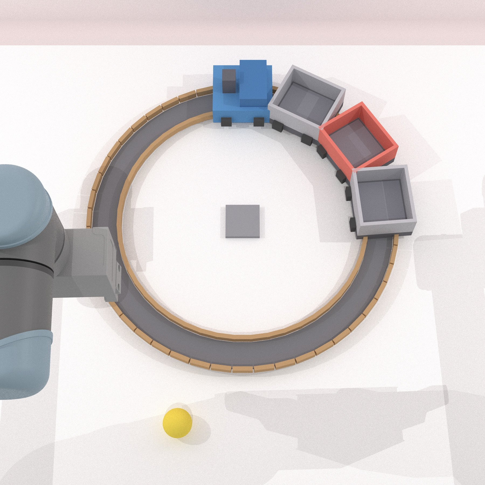
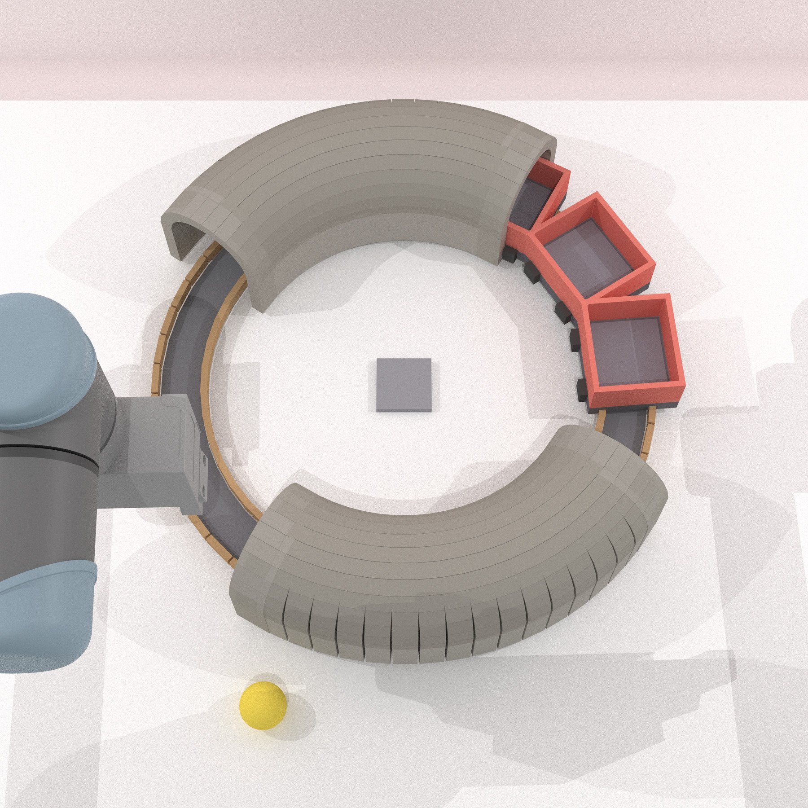
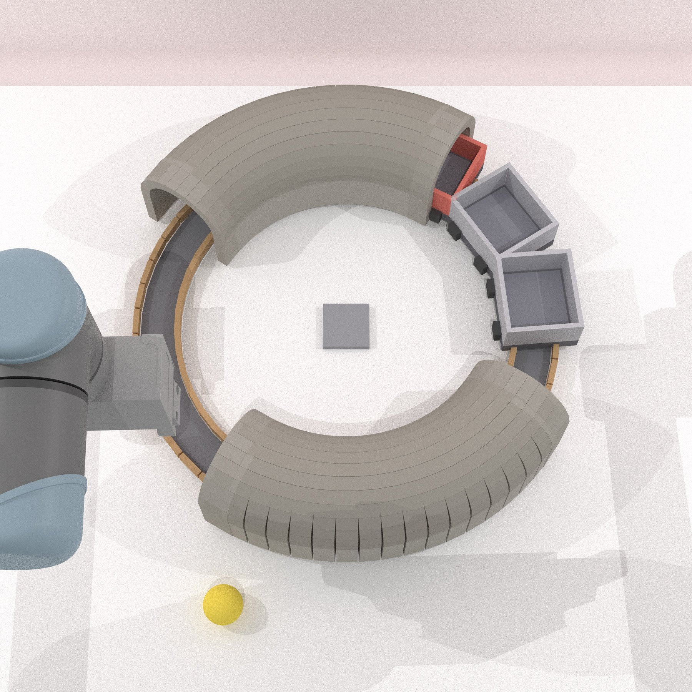
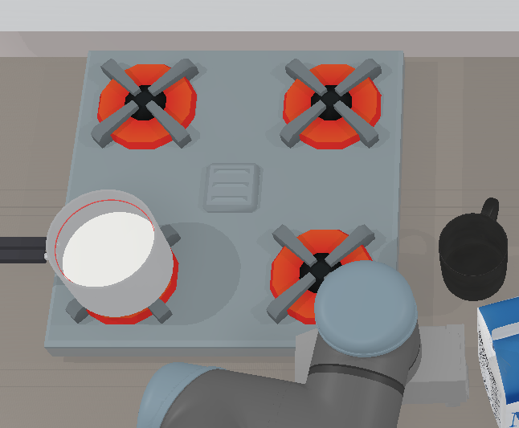
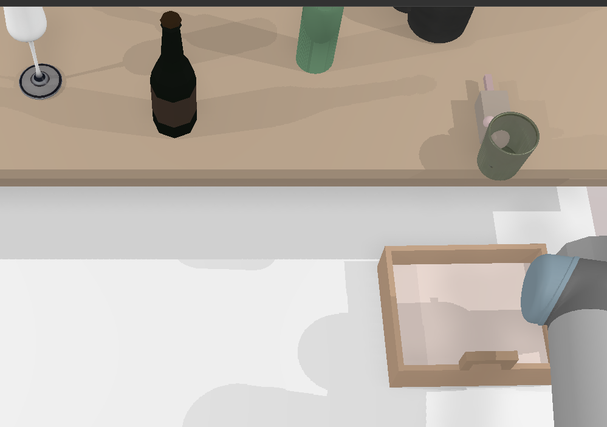
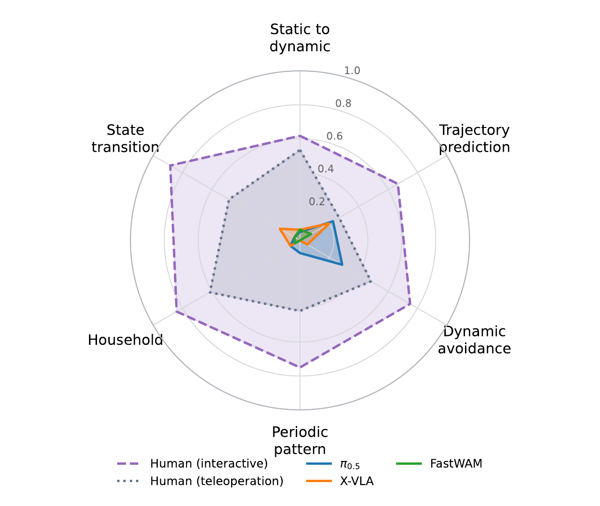

Trajectory prediction
Anticipate where a moving object will be, including motion redirected by contact or collision.
- Catch Ramp Ball
- Catch Valley Ball
- Stop Valley Ball
- Save Goal
Object manipulation in the dynamic real world requires understanding how the environment functions and evolves, and acting accordingly. Existing benchmarks, however, do not adequately address these needs. Physics-oriented benchmarks evaluate predictive fidelity but not closed-loop action. Dynamic robotic manipulation benchmarks often use simplified, physically implausible object motions, limiting evaluation of reasoning and action under realistic dynamics. Evaluation is also typically synchronized, freezing the environment during inference and making computation time irrelevant to task outcomes.
To this end, we propose RoboDyna, a benchmark for evaluating the physical understanding and action capabilities of manipulation policies in dynamic scenes. RoboDyna comprises 20 conceptual dynamic tasks spanning five capability categories, with simple objects and minimal scene clutter, under a two-factor difficulty design, and 10 household tasks that instantiate the same capabilities in visually and semantically richer simulated real-world environments. RoboDyna provides 3,500 expert demonstrations, paired synchronous and asynchronous evaluation protocols, metrics for task success and partial completion, and interactive tools for human baseline evaluation.
Evaluating vision-language-action models and a world-action model across 5.4K episodes, we find that all policies achieve success rates below 20%, revealing substantial limitations in dynamic manipulation. The world-action model captures simple physical dynamics but struggles with complex interactions, and its prediction fidelity does not consistently align with task success. Sync–async comparisons show that inference latency flips 5–12% of episode outcomes while changing average success rates by at most 3%. Human baselines substantially outperform all policies under matched conditions.
Every task is a language-conditioned dual-arm manipulation problem in SAPIEN. The scene evolves continuously under gravity, friction, collision and contact, independently of the policy.

Each category isolates one physical competence. Four conceptual tasks per category use minimal scenes with only task-relevant objects.
Anticipate where a moving object will be, including motion redirected by contact or collision.
Identify recurring motion and time actions to short opportunity windows.
Plan robot motion around independently moving objects and obstacles.
Track changes not captured by pose alone, such as ripeness, doneness or availability.
Anticipate motion the robot itself triggers in an initially static scene by pushing, striking or releasing.
Each conceptual task has four conditions: base easy, var1 and var2 medium, each adding one task-specific variation, and var1+2 hard, which composes both and is withheld from training. In Load Train, the robot drops a ball into a wagon of a circling train.

baseany wagon
var1red wagon only
var2tunnels occlude
var1+2bothTen office and kitchen scenes test the same capabilities with clutter, richer semantics, and everyday physics beyond rigid bodies: rising liquids, overflow, dispensing and spreading spills.

Boil Milk: switch off the stove before the rising milk overflows.
Catch Mouse Object Drop: predict which object the mouse knocks off, then catch it.Switch a task's condition to see each variation and how the three policies did on it (success rate, averaged over sync and async, 10 seeds each). Hover a card for its language instruction.
We fine-tune two vision-language-action models (π0.5, X-VLA) and one world-action model (FastWAM) on all 3,500 demonstrations, then evaluate each from a single checkpoint. Easy is base, Medium averages var1 and var2, and Hard is the held-out var1+2 composition. Human participants played the Hard conditions and the household tasks.
Bold marks the best policy in each column. Mean inference latency is shown under each policy name. Overall covers Easy, Medium and household, and excludes Hard. Humans are scored on success only, in real time, so the protocol switch does not apply to them.
Twelve participants played the same tasks on the same seeds: the hard var1+2 condition for conceptual tasks, and household tasks at base. They used two control modes. Teleoperation drives the arm with the keyboard, like a policy. Scene-interactive control acts on objects directly with point and click, removing the cost of low-level control.
The gap between control modes is largest on time-critical tasks. Policies do best where tracking a visible object is enough, and fail on periodic patterns, which humans solve 75% of the time.

Play all 30 RoboDyna tasks in your browser with the same point-and-click controls our human participants used. Five episodes per game, then see your success rate next to π0.5, X-VLA and FastWAM. Simplified 2D physics, not the SAPIEN benchmark.
git clone https://github.com/robodyna/robodyna.git
cd robodyna
bash script/install_robodyna.sh
conda activate robodyna
# Download the minimal runtime asset package (~1.2 GiB)
bash script/_download_assets.sh
# Explore the benchmark interactively
python interactive/robodyna_gui.py@inproceedings{li2026robodyna,
title = {Benchmarking Robotic Manipulation under
Physically Realistic Dynamics},
author = {Li, Zhiyuan and Yang, Ruiheng and Zhao, Xuan
and Rasouli, Amir},
booktitle = {NeurIPS 2026 Workshop on Robot Learning
with World Models},
year = {2026}
}